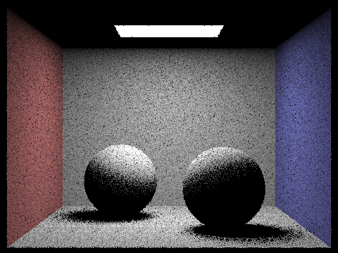
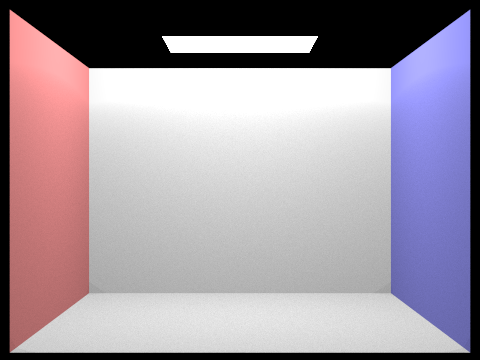

This project was all about simulating light. First, we try to understand a method for retrieving light samples as a viewer. Light is in the world, but the perception of that light changes as the view of the scene changes. To capture this understanding, we use the idea of raytracing. After this we need to develop efficient ways of doing this raytracing process, in this case, how the data should be stored and represented such that we can efficiently test rays against it. This leads to the idea of a bounding volume hierarchy. Now that we have a model for the scene and a method for testing our view with the scene, we need to simulate the light in the scene. In simulating light, we first need to understand how objects are occluded by others and how light initially travels from a source to a surface and then to our view as the viewer. In doing this we implement two methods the in terms of sampling the lights from a position: uniform hemispherical and light area importance. Now that we understand how light travels from the light source onto object and then to our view, we need to account for the fact that light does not simply bounce directly into our view but interacts with the environment first: This leads to our implementation of global environment lighting.
I ran into a lot of bugs in this project unfortunately so I am glad that I can finally give it a rest for now. The first thing that ended up happening was that I could not figure out why for part 1 the light/opening at the top of the test scenes was not showing up. It seemed like an error in terms of intersection but ended up being from a mistake in how I dealt with the normal vectors as I was trying to account for all surfaces weather they faced the view of the camera the same way, this made the top of the scene and the opening the exact same color consequently, considering that the triangles for the opening had normal that faced toward the normal of the triangles on the ceiling.
My second big problem was in general confusion in terms of finding the intersections in terms of the bounding volume hierarchy. This is related to the error above, since I was unaware as to whether my intersection code was correct or not for primitives, I could not properly decipher the problems that I was getting in terms on my bvh. Basically, I started part 2 without properly debugging part 1. Once I fixed part 1, I simply had trouble figuring out where certain dependencies in terms of intersection should go between the bvh and bbox methods.
A completely detrimental bug that I got was one involving getting a totally black result for part 3. I had almost no idea what the problem was and scoured through piazza and project parties trying to get help with no avail. From what everybody had seen, my code looked perfect, yet I couldn’t get a single result that was not completely black.
What I ended up doing to solve this problem was triangle the render the image with a variety of different parameters to see what could be causing the problem. After a long while I found that if I simply used a single ray pixel sample, I would get an image, poor and dotted as it was, and nothing with any other sampling rate (-s). The problem ended up being all the way back in part 1.1, for some reason, even though it looked fine, the condition to use one sample in the center of the pixel when num_samples==1 simply made it so that it did not work at all when num_samples > 1. After I changed a few things, the program worked almost perfectly.
I was unfortunately so plagued by one bug that I almost had to leave it for another time. The bug has to do with importance sampling and shadow rays not correctly intersecting with objects. Shadowed areas would be lit for importance sampling because the shadow rays would miss an intersection with and object and think they were lit. It was almost impossible to deduce it down to either part 2 or 3 but eventually after much trial and error I found it to be in part2 for the bounding box intersections. Luckily, I had stumbled on this paper (http://www.cs.utah.edu/~awilliam/box/box.pdf) and was able to use their implementation which fixed the bug.
There was one very minor bug that I did not have enough time to find in which the lights for zero bounce light for the scene of the bunny would not render for some reason even though it worked fine on the other scenes. I will figure this one out at another time.
Also, for importance sampling, unfortunately, I had a bug that I did not find untill the last minute, it had to do with the fact I was breaking out of the loop once w.in.z < 0 when I should have continued in the loop and simply disregarded that one sample. I unfortunately do not have enough time to re-render the images so just imagine the image on the left, whenever you see the image on the right for importance sampling!!!!!!!!!!!!!!!!!!
Part 1: Ray Generation and Intersection
For this first part we implement ray generation and intersection, basically raycasting. Here we generate a view of a scene by creating an image plane and an image center and casting rays through the pixels onto the scene. Our goal here is to approximate as accurately as possible the integral of the irradiance over the pixel. Basically, we want to know how much light will be hitting the entire area of the pixel. With this in mind for each pixel of the image plane, we take num_samples (we uniformly randomly cast num_sample many rays through the pixels at various points within it) and average over them for better results closer to that integral of irradiance we are approximating.
Furthermore, we generate these rays by first sampling num_sample pixel locations on each pixel between 0 and 1. We then convert these pixel locations to locations on a sensor one unit along the viewing direction within the camera coordinate system through a change of basis. The bottom left and top right positions of this image senor plane are Vector3D(-tan(radians(hFov)*.5), -tan(radians(vFov)*.5),-1) and Vector3D( tan(radians(hFov)*.5), tan(radians(vFov)*.5),-1) respectively and we simply change or pixel space value between 0 and 1 to be between these values. Basically, we had the point in a pixel plane and did some simple algebra and geometry to put it into another plane in the camera space. From the camera space, we generate world space coordinates that we initialize OUR ray with.
Now that we have generated these rays in world space, we want to see if they hit anything, and, if they do hit something, maybe get some data regarding what they hit. Most of the objects in the world are composed of a triangle mesh. To see what the ray hits in the world, we can simply test the ray against all the triangles with a triangle intersection algorithm. The algorithm that we use is the Möller-Trumbore algorithm. What this algorithm basically does is convert the position of the intersection from the x,y,z coordinate space to the u, v, t coordinate space, where u, v, and (1-u-v) are the barycentric coordinates of the triangle in question, and t is the distance from intersection point p on the triangle to the origin of the ray. By doing this conversion we can represent the intersection point as p = (1-u-v)A +uB+vC and p = O +tD where O is the origin of the ray. Using a little bit of linear algebra, we can convert these equations into a simple vector scaling and series of dot products. After solving for U, V and t we testing weather the point lies in the triangle by seeing if and of its barycentric coordinates in less than 1.

|
Part 2: Bounding Volume Hierarchy
Now that we can shoot rays into the scene and test for intersection, we want to be able to do this for millions of rays. At the moment we are testing each ray against each triangle thus we are doing million and millions of redundant calculations. To give ourselves a speed boost we implement a Bounding Volume Hierarchy.
What this basically does is break down our scene into a binary tree of left and right nodes. Each node is either an internal node or a leaf node. The internal node stores references to its children and the position and axis in which is splits space in 3d, and the leaf node simply stores a small number of primitive scene elements, mostly the triangles in the mesh. So what you end up doing is turning the scene basically into a binary tree that we can simply search down rather then testing every object in the tree.
To construct this tree, we simply get each primitive scene element and first find a bounding box around it and a centroid for that bounding box. We find the minimum and maximum x,y,z position values in our list of bounding boxes and choose the axis with the largest difference in minimum and maximum values to be the axis that we split our objects on. To split the objects, we find the average centroid from the centroid of all the bounding boxes and see whether the centroid of each bounding box is less than the average centroid in our split axis. If the centroid position is less than the average centroid position, we store the objects into a new left node. If the object is greater, into a new right node. We then recurse this procedure upon the newly created nodes. If the number of primitives in our current node is less than a threshold number, we simply make that node a leaf node and stop recursing.
Here is what this BVH (Bounding Volume Hierarchy) looks like

To find an intersection in our Bounding Volume Hierarchy, we first check if the bounding box of the current node intersect with our ray. If we intersect with the bounding box of the node we then check if we are a leaf node. If we are a leaf node, we check for an intersection with all scene primitives in the node. If we intersect with any of the primitives then we have intersected with the Bounding Volume Hierarchy. If we are not a leaf node, we recurse down our left and right nodes for an intersection check. Also to note, when we are checking for an intersection with the primitives we store the minimum t (distance from the ray origin), and maximum t values so that we can detect the earliest intersection.
Here are the results, we can now render scenes with millions of scene primitives:
Now let’s examine how fast of a speed up we get with this improvement. Below are some renders and the time to compute each along with the amount of intersections and the amount of scene elements.
With the BVH
[PathTracer] Input scene file: ../../dae/meshedit/cow.dae
[PathTracer] Collecting primitives... Done! (0.0003 sec)
[PathTracer] Building BVH from 5856 primitives... Done! (0.0086 sec)
[PathTracer] Rendering... 100%! (0.0670s) !! Time with the BVH is almost instantaneous!!
[PathTracer] BVH traced 343914 rays.
[PathTracer] Averaged 2.597667 intersection tests per ray.
Without the BVH
[PathTracer] Input scene file: ../../dae/meshedit/cow.dae
[PathTracer] Collecting primitives... Done! (0.0004 sec)
[PathTracer] Building BVH from 5856 primitives... Done! (0.0003 sec)
[PathTracer] Rendering... 100%! (48.4444s) !! 700x longer !!
[PathTracer] BVH traced 479086 rays.
[PathTracer] Averaged 1061.906720 intersection tests per ray.
With the BVH
[PathTracer] Input scene file: ../../dae/sky/CBgems.dae
[PathTracer] Collecting primitives... Done! (0.0000 sec)
[PathTracer] Building BVH from 252 primitives... Done! (0.0003 sec)
[PathTracer] Rendering... 100%! (0.0515s) !! Time With the BVH !!
[PathTracer] BVH traced 319962 rays.
[PathTracer] Averaged 1.762959 intersection tests per ray.
Without the BVH
[PathTracer] Input scene file: ../../dae/sky/CBgems.dae
[PathTracer] Collecting primitives... Done! (0.0000 sec)
[PathTracer] Building BVH from 252 primitives... Done! (0.0000 sec)
[PathTracer] Rendering... 100%! (2.0791s) !! 40x longer !!
[PathTracer] BVH traced 472623 rays.
[PathTracer] Averaged 47.285481 intersection tests per ray.
As we can see the improvement is very large on the order of 40x the speed up. The reason for this is obvious, when we use the bounding volume hierarchy, we are simply traversing a binary tree for the most part. A search on a BST is O(rlogn) complex where n is how many levels of the tree we have and r is how many rays we need to test. If we were to brute force, we would check every ray against every scene primitive so our complexity would be O(r*n) which is much slower. We can see this in our results for example the cow model has 5856 scene primitives and took 48.44 seconds without the bvh but took only 0.0670s seconds with the bvh. Furthermore, with the BVH the average intersection test per ray was 2.597667 while it was 1061.906720 without.
Part 3: Direct illumination
Now it is time for the real stuff.
We are able to test and visualize our scene by shooting rays into it; now we want to be able to simulate lights in the scene and then detect how much light is transmitted from the scene into our view from the rays we are shooting.
So the situation is this, we have light sources shining light onto the scene, how much light is going from the light source and falling in a straight line directly onto the scene.
Here we implement 2 ways of doing this: Uniform Hemispherical sampling and Importance sampling
Uniform hemispherical sampling works as follows: we shoot a ray into the scene and hit a point on it. At that point, we take samples in a uniform hemisphere around the point (we shoot rays from that point into the scene). For each of these samples we test whether it hits a light source and if it does we compute how much of that light falls onto the point that we are sampling with the hemisphere. We then convert this incoming light into outgoing light in the opposite direction of the ray we cast back into our view with a BSDF on the surface. A BSDF (bidirectional scattering distribution function) basically tells us how much light bounces off a surface in a particular direction. We then average across all the samples we took.
Uniform hemispherical sampling can be quite noisy and require a long time and many samples to converge, to solve this, we use Importance sampling. This method basically follows the same procedure as before, but now rather than sampling randomly over a hemisphere we sample in the direction of the light, we sample the lights directly. So, for each hit point we sample across all the lights in the scene compute the incoming light from those samples, convert them to outgoing light using the BSDF and average.
Here we can see the results:
|
|
|
Now if we examine what happens when we increase the number of samples, we take from each hit point we can see how the shadows properly develop. The extra samples mean that we achieve a more accurate estimate of what the particular lighting value for that hit point is rather then a value that is too high or too low.
|
|

|
|
|
|
As seen in the images above we first start off with a specked shadow as the number of samples to average from is not high enough to get an accurate value. As we increase the number of samples the noise significantly reduces.
|
|
|
Above we compare hemisphere sampling and importance lighting sampling. For the most part, the 2 will converge to the same answer the only difference is the amount of time. Hemisphere lighting, in this particular context, is simply a slower and noisier version of importance sampling. Importance sampling does the exact same thing as Hemisphere sampling but simply samples the areas that will actually be relevant to the lighting. If the amount of lights in the scene was much higher, then uniform hemisphere sampling would be about the same as importance, but that is not the case here.
Part 4:Global Illumination
Now we have a lit scene, but something is off. The shadows the colors, the objects in the scene seem to all be in their own world. There is no interaction between them. Light does not bounce off od surfaces and land on other surfaces as they do in reality, thus are images seem fake.
To solve this we add indirect lighting to our direct lighting.
From our hit point onto the scene we want to see how much light from objects around us affect our current value, we want to know how much light is coming from things that are not light. Thus, we sample randomly from that surface point the scene around it. We get these samples from our BSDF. We calculate the light coming from that sample, which includes the direct lighting and indirect lighting, and add it to our current value for the light coming onto the surface.
Now there is a big problem here, this procedure is infinitely recursive, the indirect light value we get at one point depends on the indirect light value we get from another point, so when do we stop. We could simply put a hard limit to the amount of bounces we do off of our surfaces, but we can do something cleverer. After every bounce we probabilistically determine whether to continue or not and weigh our lighting sample by the probability that we get there. This means we have non-zero probability of sampling paths of arbitrarily high number of bounces. This procedure is called Russian Roulette.
Here are the results
|

|
|
Below we show the scene with only indirect lighting and only direct lighting
|
|
|
|
|
Here we compare renders with different amounts of maximum bounce depth. As shown because of the Russian roulette, it does not converge to infinity and evens out even for incredibly high number of bounces. This is especially true since my probability of termination here is set to 0.6
|
|
|
|
|
|
|
|
Here we compare sample-per-pixel rates. As shown, as we increase the amount of samples we do we get a more accurate smoothed out result and much less noise.
|
|
|
|
|
|
|
|
|
|
|